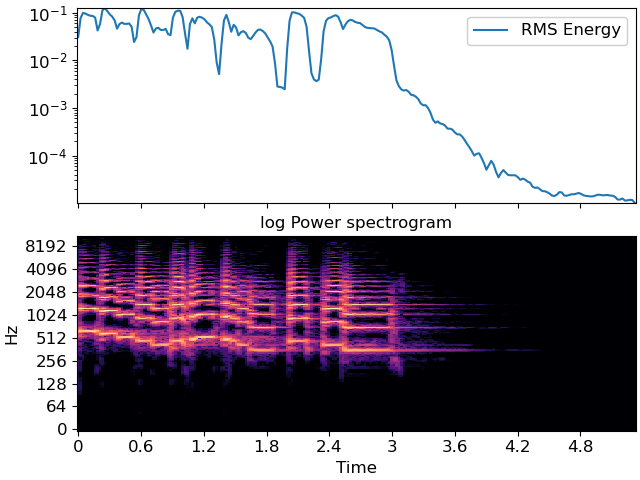

librosa.feature.rms¶
- librosa.feature.rms(*, y=None, S=None, frame_length=2048, hop_length=512, center=True, pad_mode='constant')[source]¶
Compute root-mean-square (RMS) value for each frame, either from the audio samples
yor from a spectrogramS.Computing the RMS value from audio samples is faster as it doesn’t require a STFT calculation. However, using a spectrogram will give a more accurate representation of energy over time because its frames can be windowed, thus prefer using
Sif it’s already available.- Parameters
- ynp.ndarray [shape=(…, n)] or None
(optional) audio time series. Required if
Sis not input. Multi-channel is supported.- Snp.ndarray [shape=(…, d, t)] or None
(optional) spectrogram magnitude. Required if
yis not input.- frame_lengthint > 0 [scalar]
length of analysis frame (in samples) for energy calculation
- hop_lengthint > 0 [scalar]
hop length for STFT. See
librosa.stftfor details.- centerbool
If True and operating on time-domain input (
y), pad the signal byframe_length//2on either side.If operating on spectrogram input, this has no effect.
- pad_modestr
Padding mode for centered analysis. See
numpy.padfor valid values.
- Returns
- rmsnp.ndarray [shape=(…, 1, t)]
RMS value for each frame
Examples
>>> y, sr = librosa.load(librosa.ex('trumpet')) >>> librosa.feature.rms(y=y) array([[1.248e-01, 1.259e-01, ..., 1.845e-05, 1.796e-05]], dtype=float32)
Or from spectrogram input
>>> S, phase = librosa.magphase(librosa.stft(y)) >>> rms = librosa.feature.rms(S=S)
>>> import matplotlib.pyplot as plt >>> fig, ax = plt.subplots(nrows=2, sharex=True) >>> times = librosa.times_like(rms) >>> ax[0].semilogy(times, rms[0], label='RMS Energy') >>> ax[0].set(xticks=[]) >>> ax[0].legend() >>> ax[0].label_outer() >>> librosa.display.specshow(librosa.amplitude_to_db(S, ref=np.max), ... y_axis='log', x_axis='time', ax=ax[1]) >>> ax[1].set(title='log Power spectrogram')
Use a STFT window of constant ones and no frame centering to get consistent results with the RMS computed from the audio samples
y>>> S = librosa.magphase(librosa.stft(y, window=np.ones, center=False))[0] >>> librosa.feature.rms(S=S) >>> plt.show()
